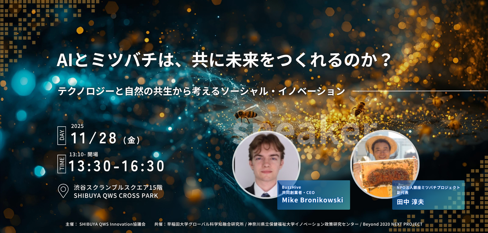
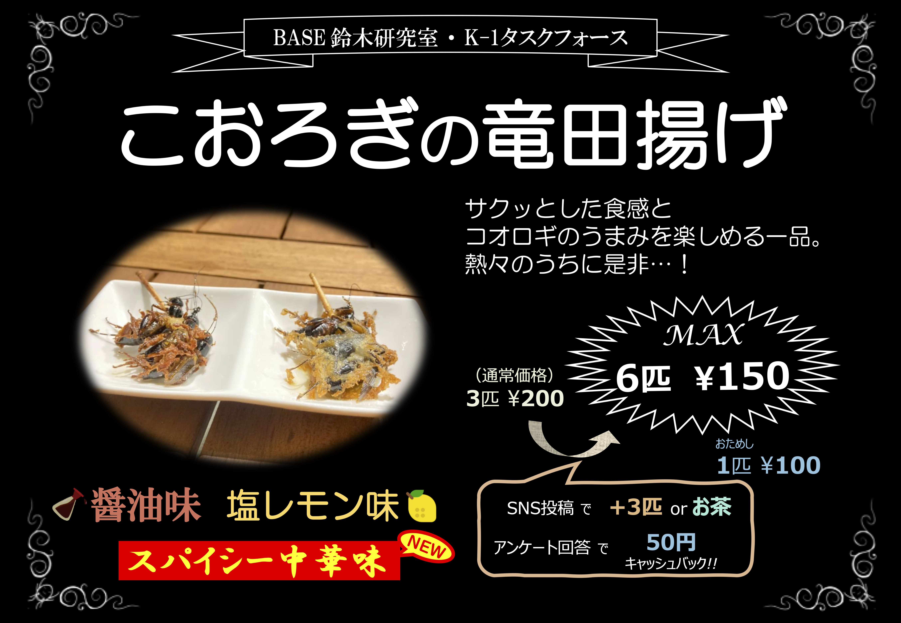
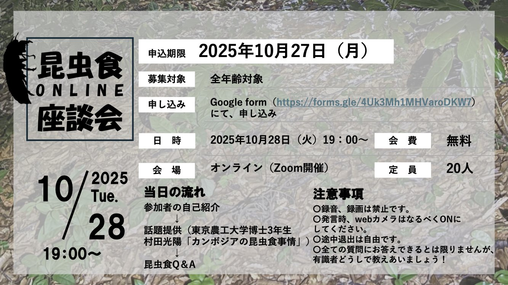
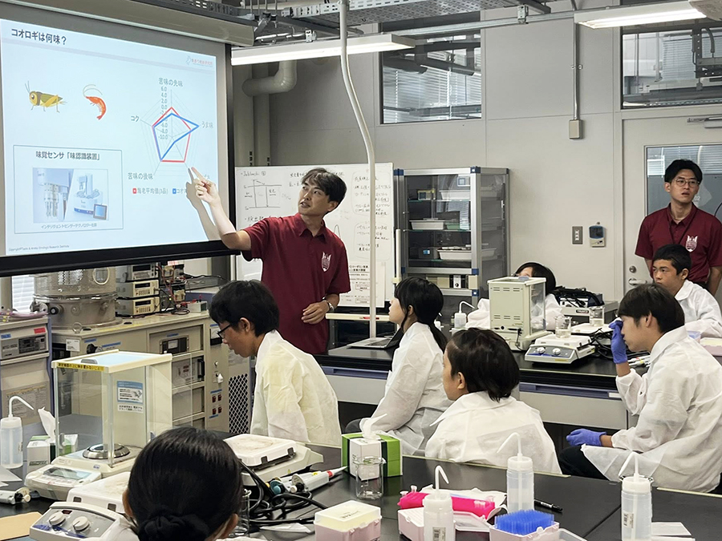
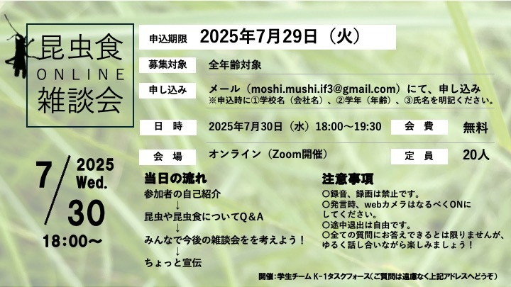
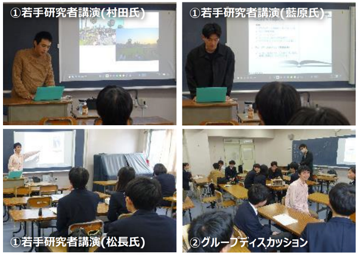
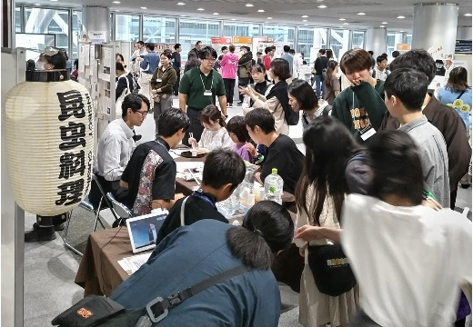
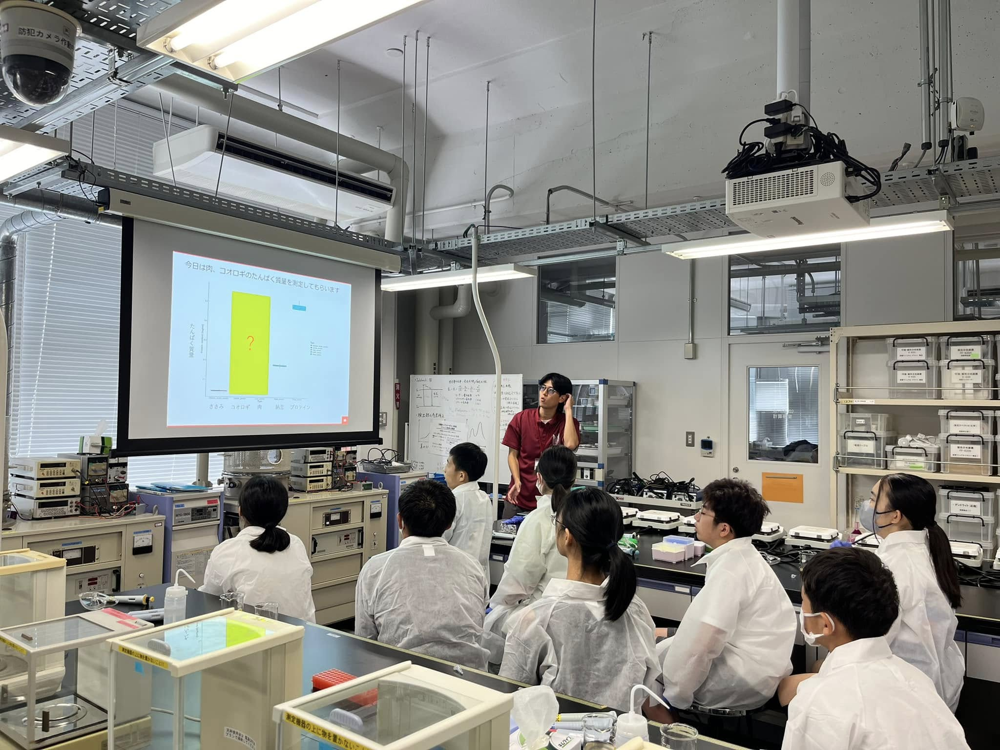

2026.01.23
EVENT
代表の藍原が「Feeding the Future -食糧危機を乗り越えろ！- ICC トークセッション」にゲスト登壇
📍 早稲田大学 早稲田キャンパス
食糧危機を取り巻く現状の全体像を学ぶだけでなく、サステナブルフードについても紹介。昆虫食の試食やグループワーク、培養肉についてのセッションも用意されています。
食糧危機を取り巻く現状の全体像を学ぶだけでなく、サステナブルフードについても紹介。昆虫食の試食やグループワーク、培養肉についてのセッションも用意されています。

ニューヨーク州立大学のJoey Tsai准教授やBuzzHiveのMike Bronikowski CEOを招いたワークショップ。AI巣箱や都市養蜂を通じたソーシャル・イノベーションについて議論しました。

鈴木丈詞研究室と共同出店。3日間で約2,000本を完売する大盛況となりました。醤油・塩レモン・スパイシー中華の3種を提供し、貴重な社会実装の機会となりました。

リラックスした雰囲気で昆虫食の未来を語り合う交流会。対話を通じたコミュニティ形成と、社会実装に向けたヒントを探求しました。

タンパク質量の測定実験を行い、科学的データで昆虫食を検証。次世代の探究心を育む教育活動となりました。


実食を通じた社会受容性の研究アンケートを実施。「美味しい」という体験が食の障壁を越える可能性を実感しました。

食用昆虫科学研究会と共同出展。「美味しいから食べる」という原点を大切にした、理想的な対話が生まれました。

新たなリーダーシップのもと、社会実装に向けた活動を加速させていきます。